Show other secondary papers
Anisotropic interface-confined superconductivity in FeTe-based heterostructures
Authors: Bicky Singh Moirangthem, Kamal R. Joshi, Zi-Jie Yan, Pu Xiao, Lok-Kan Lai, Cui-Zu Chang, Ruslan Prozorov
Type: experiment · Category: other · PDF: https://arxiv.org/pdf/2609.38148v1
Analysis basis: full PDF text, analyzed in chunks
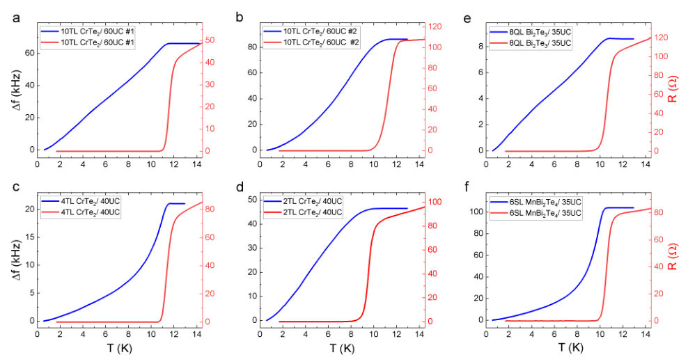
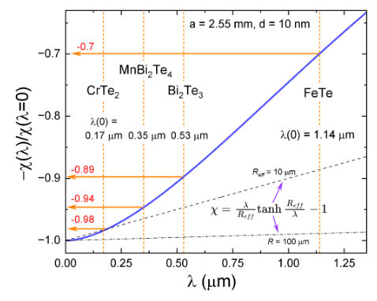
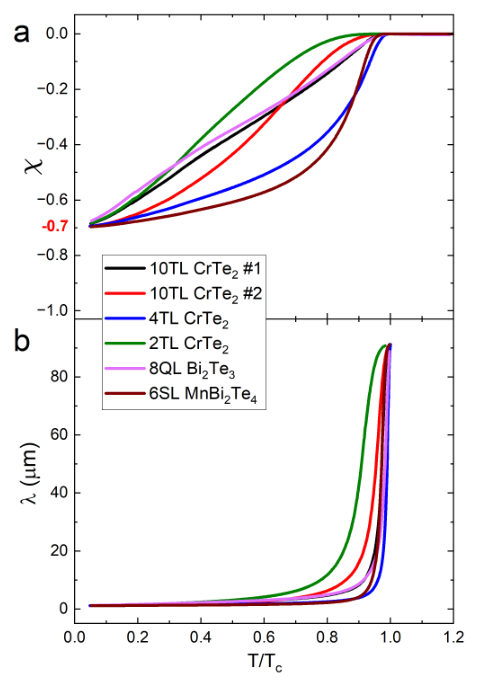
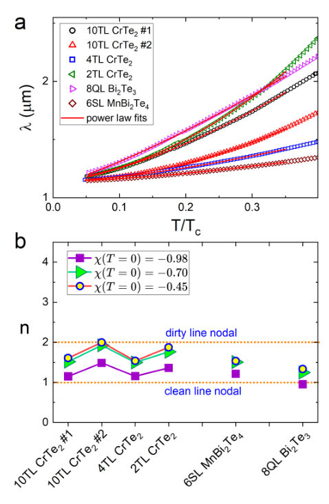
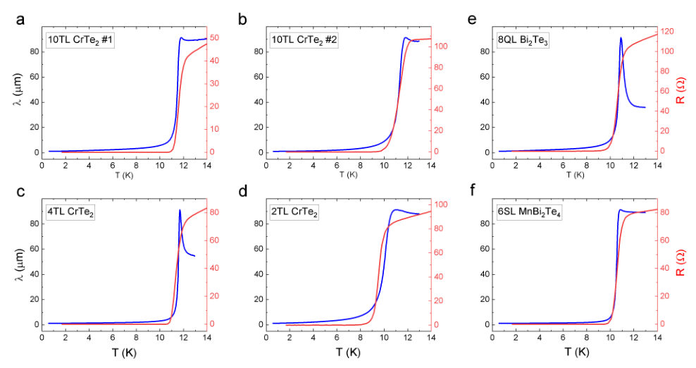
Summary. The authors investigated superconductivity in ultrathin FeTe-based heterostructures by measuring the whole-sample magnetic response. They developed a specialized analysis to overcome geometric measurement artifacts, successfully extracting the temperature-dependent London penetration depth. The results strongly suggest that the superconductivity originates at the FeTe interface and possesses a highly anisotropic order parameter, pointing toward unconventional pairing mechanisms.
Why it may be interesting. This work provides a rigorous experimental methodology for probing superconducting properties in highly confined, complex interfaces, which is crucial for realizing novel quantum materials.
Detailed structure
Main problem. The primary challenge is determining the intrinsic superconducting nature of an interfacial layer that is only a few nanometers thick, especially in systems where magnetism and topology coexist.
Main result. The superconducting state is governed by the interfacial FeTe layer, exhibiting a strongly anisotropic order parameter (suggesting line nodes or deep gap minima) rather than a simple isotropic s-wave gap.
Method. The study measures the whole-sample Meissner response ($\chi(T)$) using a frequency-domain tunnel-diode resonator (fTDR) and extracts the London penetration depth ($\lambda(T)$) by inverting the susceptibility.
Model / system. The research investigates FeTe-based heterostructures formed by interfacing FeTe with various overlayers (e.g., $ ext{CrTe}_2$, $ ext{MnBi}_2 ext{Te}_4$). The superconducting layer is assumed to be ultrathin and buried beneath normal layers.
Key observables. Whole-sample magnetic susceptibility ($\chi(T)$), London penetration depth ($\lambda(T)$), and the resistive transition ($R(T)$).
Important parameters / regimes. The analysis is highly sensitive to the ultrathin geometry, requiring specialized calibration because conventional normalization ($\chi(T o 0) = -1$) fails.
Assumptions / limitations. The authors assume that the broad magnetic transitions are due to extreme geometry and large $\lambda$, rather than structural or chemical inhomogeneity, allowing for the extraction of intrinsic $\lambda(T)$.
Figures summary. Figures compare the temperature dependence of the resonant frequency shift ($\Delta f$) and resistance ($R$) across six heterostructures, showing alignment between the superconducting transition and diamagnetic screening. $\lambda(T)$ is extracted and analyzed via power-law fits.
Paper structure. The paper establishes the experimental setup using fTDR to measure $\chi(T)$ on multiple heterostructures. It addresses the failure of standard normalization in the ultrathin limit, develops a calibration to extract $\lambda(T)$, and then analyzes the temperature dependence of $\lambda(T)$ and the superfluid density to constrain the superconducting gap structure.
Abstract
Interface-confined superconductivity emerges from the interaction of electronic states across chemically distinct boundaries, providing a route to engineer superconducting phases where magnetism and topology coexist. Determining the intrinsic nature of such superconductivity, however, is challenging because the superconducting layer is only a few nanometers thick and buried beneath several normal layers. Here, we measure the whole-sample Meissner response of six $\mathrm{FeTe}$-based heterostructures in a uniform magnetic field using a frequency-domain tunnel-diode resonator. In the ultrathin limit, the conventional normalization of the measured susceptibility, $χ(T\to0)=-1$, fails by tens of percent. We establish the appropriate calibration and invert $χ(T)$ to determine the London penetration depth $λ(T)$. Two key results emerge. First, the broad transitions observed in $χ(T)$ arise naturally from the extreme geometry and large $λ$, without requiring chemical or structural inhomogeneity; the extracted $λ(T)$ closely tracks the resistive transition. Second, $λ(T)$ and the corresponding superfluid density are inconsistent with a fully gapped isotropic $s$-wave state and instead indicate a strongly anisotropic order parameter possibly with line nodes or deep gap minima. The inferred $λ(0)$ is of order $1\,μ$m, consistent with an independent analysis of the 2D phase stiffness. Despite the distinct chemical, magnetic, and topological character of the three overlayers, all six FeTe heterostructures exhibit similar low-temperature power-law behavior, with no systematic dependence of the superconducting response on overlayer identity. These results point to the interfacial $\mathrm{FeTe}$ layer as the common origin of superconductivity.
Enhanced Critical Currents and Irreversibility Fields in YBa$_2$Cu$_4$O$_8$ Films through Ca-Substitution
Authors: Jiangteng Liu, Shuhei Funaki, Yuki Ogimoto, Bryan Zhang, Ryoya Nagaura, Ryuji Yoshida, Takeharu Kato, Masashi Miura, Serena Eley
Type: experiment · Category: strongly correlated electrons · PDF: https://arxiv.org/pdf/2609.36402v1
Analysis basis: full PDF text, analyzed in chunks
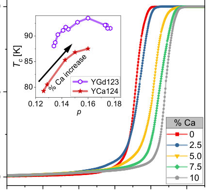
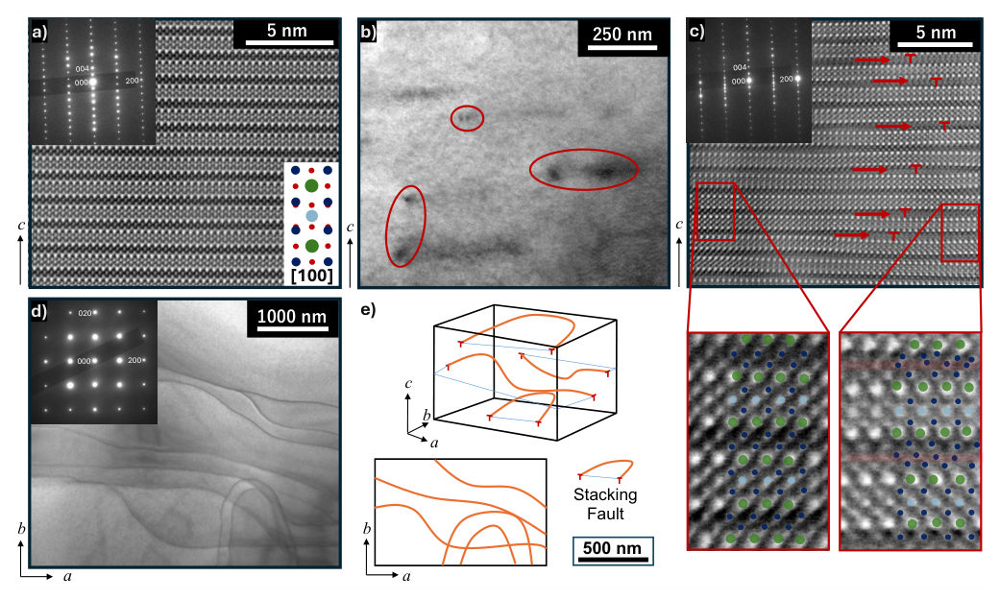
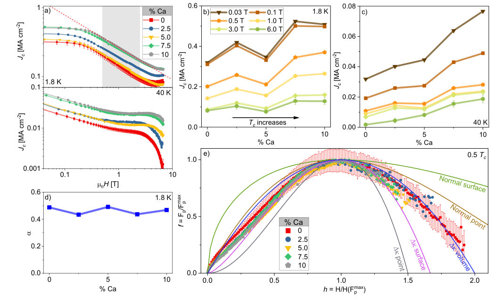
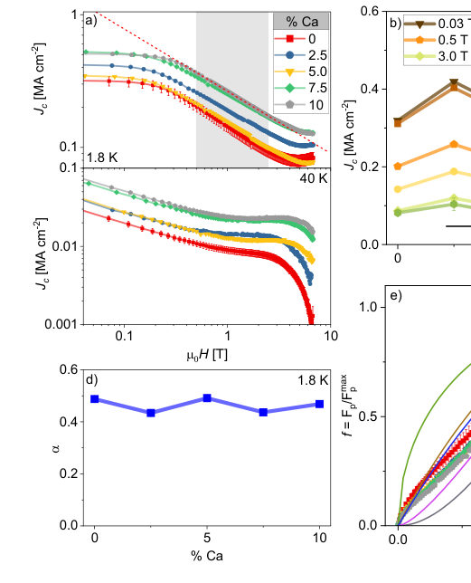
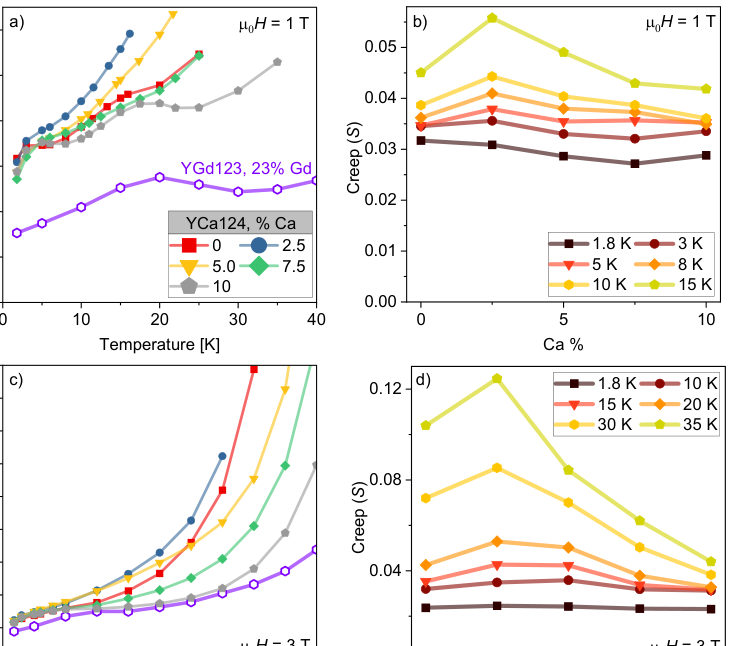
Summary. This work demonstrates that substituting Calcium into YBa2Cu4O8 films enhances superconducting performance by optimizing the hole doping level. By increasing the critical current density ($J_c$) and slowing vortex creep, the study confirms that structural defects, specifically Y-125 stacking faults, act as the dominant and robust pinning mechanism.
Why it may be interesting. While focused on cuprates, the detailed analysis of vortex dynamics, pinning mechanisms, and the interplay between doping, disorder, and superconducting parameters provides rich context for understanding strongly correlated superconducting states.
Detailed structure
Main problem. The study aims to optimize superconducting properties, specifically critical current density ($J_c$) and vortex dynamics, in YBa2Cu4O8 films by tuning the hole concentration.
Main result. Ca substitution increases the hole concentration in YCa124 films, driving them toward optimal doping, which significantly enhances $T_c$ and $J_c$. The pinning mechanism remains consistent, governed by planar stacking-fault intergrowths.
Method. The research combines epitaxial film growth, magnetotransport measurements (SQUID), and structural characterization (STEM) to analyze superconducting parameters.
Model / system. The physical system is epitaxial YBa2Cu4O8 (YCa124) films, a high-temperature superconductor. The analysis involves concepts like the Ginzburg number ($G_i$) and vortex pinning models (e.g., Dew-Hughes model).
Key observables. Critical current density ($J_c$), superconducting transition temperature ($T_c$), creep rate ($S$), and the power-law exponent ($\alpha$) in $J_c \propto B^{-\alpha}$.
Important parameters / regimes. Ca doping concentration ($x$), hole concentration ($p$), temperature ($T$), and applied magnetic field ($B$).
Assumptions / limitations. The enhancement of $J_c$ is attributed to Ca-induced disorder creating efficient planar pinning centers, and the analysis uses established empirical relations for doping dependence.
Figures summary. Figures show the dependence of $T_c$ and $J_c$ on Ca doping, STEM images reveal planar stacking faults, and plots demonstrate the constant field dependence of $J_c$ and overlapping pinning force curves.
Paper structure. The paper systematically investigates how Ca substitution tunes doping levels, leading to enhanced $T_c$ and $J_c$. It then analyzes the field dependence of $J_c$ and the vortex creep rate, correlating these changes with structural features like stacking faults and theoretical bounds like $J_d$ and $G_i$.
Abstract
The intrinsic carrier concentration of superconducting materials may not be optimal, and different superconducting properties may have distinct optimal doping levels. Here, we show that Ca substitution increases the hole concentration in intrinsically underdoped epitaxial (Y$_{1-x}$Ca$_x$)Ba$_2$Cu$_4$O$_8$ (YCa124) films with $x \leq 0.10$, driving YCa124 toward optimal doping, increasing $T_c$ and $J_c$. At 40 K, 10% Ca doping increases $J_c$ by factors of 2.4 and 10 at 0.03 and 6 T, respectively, compared with the undoped film. The field dependence of $J_c$ follows $J_c \propto B^{-0.5}$, independent of Ca content, indicating that Ca substitution does not alter the dominant pinning mechanism. This field dependence is consistent with pinning by planar Y-125 stacking-fault intergrowths observed by electron microscopy. In addition, Ca substitution slows thermally activated vortex motion (creep) at $T \gtrsim 15$ K, while at lower temperatures the creep rate $S$ shows an unusual decrease with increasing field. Finally, we consider how doping tunes the upper bound on $J_c$, set by the depairing current density $J_d$, and the lower bound on creep, set by the Ginzburg parameter $G_i$. We find positive correlations between $J_c$ and $J_d$, and between $S$ and $G_i$, and compare them with trends across a broad range of superconductors.
Symmetry-enforced topological parity: revisiting $2\mathbb{Z}$ classifications beyond cellwise symmetry actions
Authors: Ken Shiozaki
Type: theory · Category: other · PDF: https://arxiv.org/pdf/2609.37106v1
Analysis basis: full PDF text, analyzed in chunks
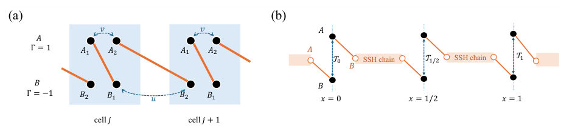
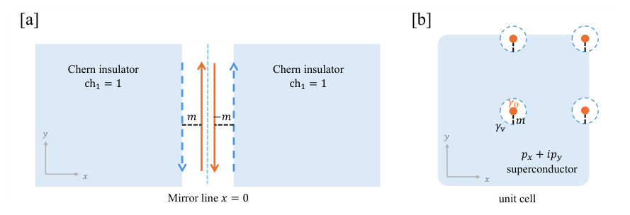
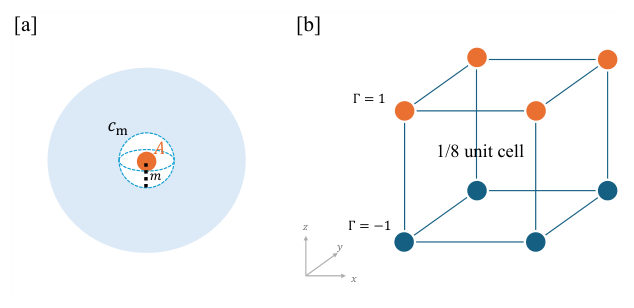
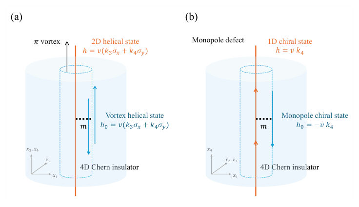
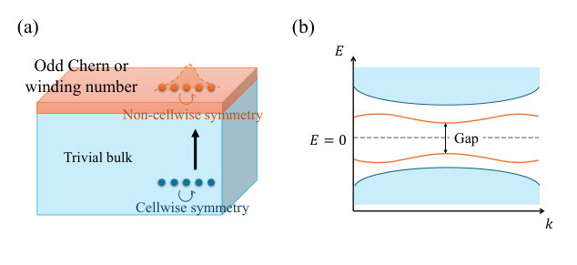
Summary. This theoretical paper investigates how momentum-dependent symmetries can alter the topological classification of insulators, potentially allowing for odd topological invariants. By rigorously analyzing the role of locality, the authors establish strict rules governing whether such odd invariants can physically exist in lattice models.
Why it may be interesting. This work provides deep mathematical constraints on topological phases, which is foundational knowledge for understanding symmetry-protected topological phases relevant to quantum materials and condensed matter theory.
Detailed structure
Main problem. The paper revisits the classification of topological insulators and superconductors by analyzing how momentum-dependent symmetry actions can change the topological constraint from an even-integer ($\mathbb{Z}_2$) to an odd-integer constraint.
Main result. The realization of odd topological numbers is highly constrained by locality, leading to three distinct possibilities: realizable by finite-range actions, realizable only by exponentially decaying quasilocal actions, or impossible in finite-dimensional Bloch systems.
Method. The authors derive parity relations between topological invariants (Chern/winding numbers) and symmetry operator invariants, comparing locality conditions (cellwise $\subseteq$ finite range $\subseteq$ quasilocal) to establish these constraints.
Model / system. The study focuses on single-particle systems described by gapped Hamiltonians ($H_k$) on the Brillouin torus $T^d$, incorporating internal and order-two crystalline symmetries (e.g., Time-Reversal Symmetry and Particle-Hole Symmetry).
Key observables. Topological invariants such as the Chern number and winding number, and the parity constraint relating the Hamiltonian's invariant to the symmetry operator's invariant.
Important parameters / regimes. The dimensionality of the system ($d=1$ to $4$), the nature of the symmetry action (momentum-dependent vs. cellwise), and the locality scale (finite-range vs. quasilocal).
Assumptions / limitations. The analysis assumes working with single-particle degrees of freedom per unit cell and relies on establishing paths between fixed momentum planes ($k_4=0$ and $k_4=\pi$) using techniques like polar decomposition.
Figures summary. Not specified, but the analysis involves comparing isomorphism classes of real symmetric matrices derived from symmetry-related operators at different momentum points.
Paper structure. The paper is highly structured, first establishing the general framework and symmetry analysis, then deriving parity relations across dimensions (1D to 4D), and concluding with explicit model constructions and no-go theorems based on locality.
Abstract
Momentum-dependent symmetry actions can turn the even-integer constraint of a $2\mathbb{Z}$ classification of topological insulators and superconductors into an odd-integer constraint without changing the symmetry algebra. For internal and order-two crystalline symmetries in up to four spatial dimensions, we derive parity relations between the Chern or winding number of a gapped Hamiltonian and topological invariants of its momentum-dependent antiunitary symmetry matrices. Whenever the symmetry action enforces odd parity, any symmetry-preserving gapped phase must be topologically nontrivial. Using cellwise actions, which are represented by momentum-independent matrices in a fixed unit-cell basis, as a reference, we determine how locality constrains the realization of odd topological numbers. Explicit model constructions and no-go theorems distinguish three cases: odd values can be realized by finite-range symmetry actions, can be realized by exponentially decaying quasilocal actions but not by finite-range actions, or are impossible in finite-dimensional Bloch systems.
Topological Hall Effect Induced by Chiral Spin Textures at the Ferroelectric/Ferromagnetic Interface
Authors: Jingkuan Xiao, Yaqing Han, Jianfeng Guo, Renjun Du, Jiawei Jiang, Baoshan Cui, Runnong Zhou, Siqin Wang, Siqi Jiang, Fuzhuo Lian, Di Zhang, Guodong Ma, Jiabei Huang, Zhaochen Qu, Wanting Xu, Kenji Watanabe, Takashi Taniguchi, Alexander S. Mayorov, Jinsheng Wen, Haifeng Ding, Gong Chen, Ahmet Avsar, Hongxin Yang, Lihong Bao, Hong-Jun Gao, Shiyu Zhu, Lei Wang, Geliang Yu
Type: both · Category: other · PDF: https://arxiv.org/pdf/2609.37406v1
Analysis basis: full PDF text, analyzed in chunks
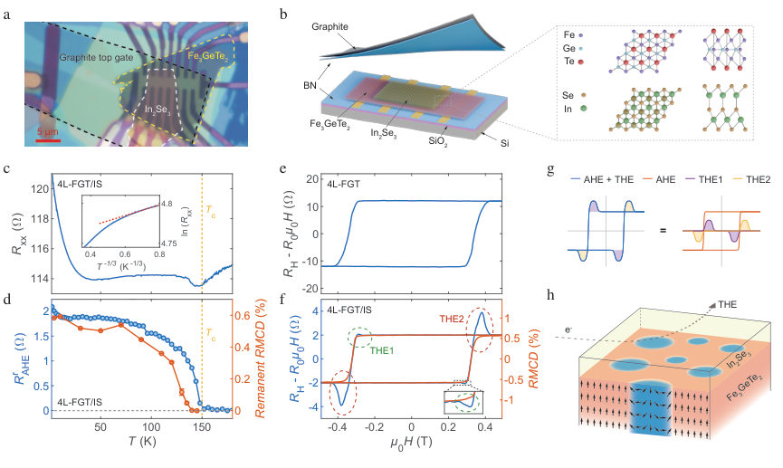
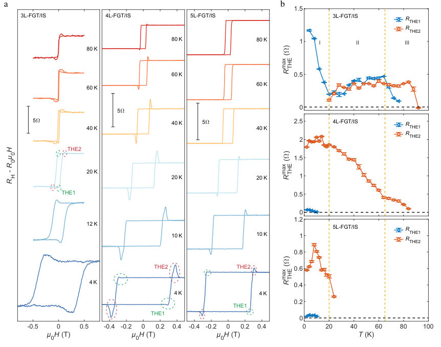
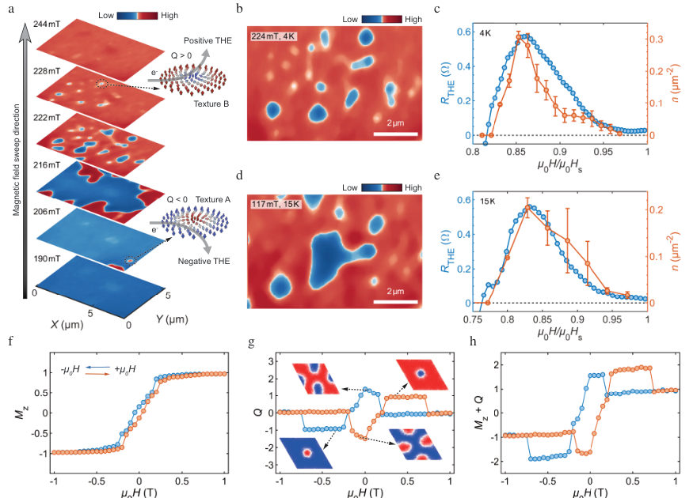
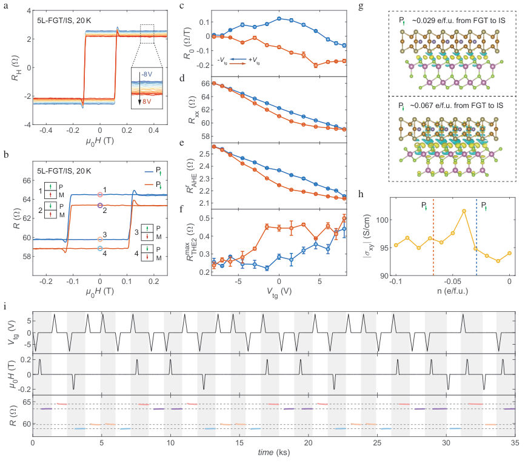
Summary. This paper investigates how chiral spin textures, stabilized by DMI, generate a Topological Hall Effect in $ ext{Fe}_3 ext{GeTe}_2/\alpha ext{-In}_2 ext{Se}_3$ heterostructures. By utilizing the switchable ferroelectric polarization of the $ ext{In}_2 ext{Se}_3$ layer, the authors demonstrate nonvolatile electrical control over the THE. This work highlights the potential of vdW interfaces for advanced, electrically programmable spintronic devices.
Why it may be interesting. While the core physics is condensed matter magnetism, the demonstration of electrical control over topological magnetic states (THE) in a vdW heterostructure is highly relevant to developing novel, energy-efficient memory and logic devices, bridging magnetism and ferroelectricity.
Detailed structure
Main problem. The study investigates the Topological Hall Effect (THE) induced by chiral spin textures at the interface between ferroelectric and ferromagnetic materials, aiming to demonstrate nonvolatile electrical control over these topological magnetic phenomena.
Main result. The research successfully shows that the system exhibits interfacial chiral spin textures stabilized by DMI, leading to two distinct THE components, and further demonstrates that the combination of ferroelectric and magnetic bistabilities enables a nonvolatile four-state memory functionality.
Method. The work combines transport measurements (measuring AHE and THE components), real-space imaging using MFM, and theoretical modeling using atomistic spin-dynamics simulations and first-principles calculations.
Model / system. The physical system is a few-layer van der Waals heterostructure, specifically $ ext{Fe}_3 ext{GeTe}_2/\alpha ext{-In}_2 ext{Se}_3$, which combines ferromagnetic and ferroelectric properties. The physics is governed by interfacial Dzyaloshinskii-Moriya interaction (DMI) and switchable ferroelectric polarization.
Key observables. Topological Hall Resistance ($R_{THE}$), Anomalous Hall Resistance ($R_{AHE}$), hysteresis loops, and the number of distinguishable Hall resistance states (up to four).
Important parameters / regimes. Coercive field ($\mu_0H_c$), critical temperature ($T_c$), and the ferroelectric polarization state.
Assumptions / limitations. The THE is primarily attributed to interfacial chiral spin textures stabilized by DMI, and the ferroelectric polarization acts as a switchable, nonvolatile tuning knob for these topological effects.
Figures summary. Figures illustrate temperature and magnetic field dependence of Hall resistance, showing distinct THE components ($ ext{THE}_1, ext{THE}_2$) and the correlation between magnetic bubble density (MFM) and THE magnitude.
Paper structure. The paper progresses by establishing the physical system and the theoretical basis (DMI, THE), presenting experimental evidence of the THE and its thickness/temperature dependence, and culminating in the demonstration of electrical control via ferroelectric switching to achieve multi-state memory.
Abstract
Chiral spin textures, largely driven by the Dzyaloshinskii-Moriya interaction, offer significant potential for next-generation computing technologies due to their chirality and topological stability. Ferroelectric/ferromagnetic van der Waals heterostructures are particularly appealing because they can combine interfacial inversion-symmetry breaking and spin-orbit coupling to promote interfacial Dzyaloshinskii-Moriya interaction, while switchable ferroelectric polarization provides a nonvolatile tuning knob. This study investigates interfacial chiral spin textures in few-layer Fe$_3$GeTe$_2$/$α$-In$_2$Se$_3$ heterostructures. Two groups of topological Hall signals are identified just below and above the coercive field, and thickness-dependent transport reveals a notable reduction in critical temperature with increasing Fe$_3$GeTe$_2$ layer thickness. Low-temperature magnetic force microscopy images reveal two types of magnetic bubbles with opposite magnetic contrasts near the coercive field, each associated with distinct topological Hall signals. Together with atomistic spin-dynamics simulations and first-principles calculations, these results support the formation of interfacial DMI-stabilized chiral spin textures. Switching the ferroelectric polarization of the $α$-In$_2$Se$_3$ layer further enables nonvolatile modulation of both anomalous and topological Hall effects. The resulting ferroelectric and magnetic bistabilities generate four distinguishable Hall resistance states programmable by electric and magnetic fields. These findings highlight the potential of van der Waals interfaces for advanced device applications.
Topology Obstructs Nodeless Excitons
Authors: Lumen Eek
Type: theory · Category: other · PDF: https://arxiv.org/pdf/2609.36248v1
Analysis basis: full PDF text, analyzed in chunks
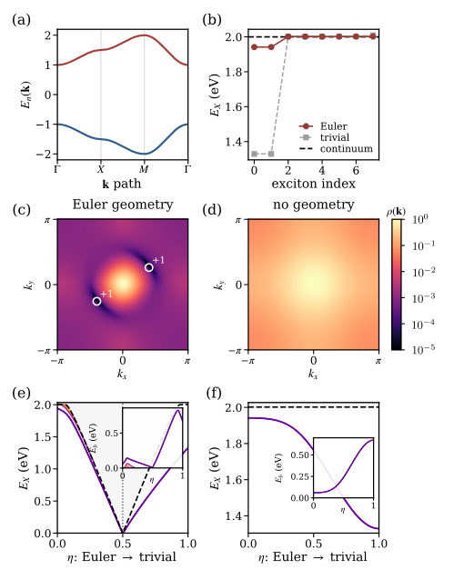
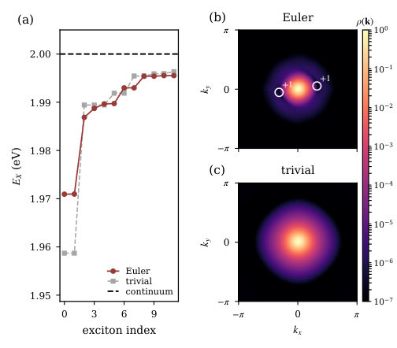
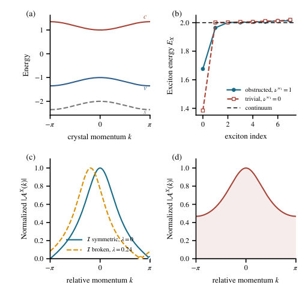

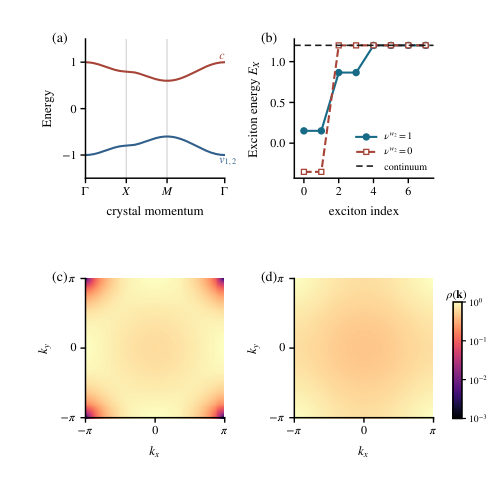
Summary. This theoretical paper demonstrates that the topology of the electronic band structure can fundamentally obstruct the formation of simple, nodeless excitons. By analyzing systems using topological invariants like the Euler number, the authors show that non-trivial topology forces nodes into the exciton wavefunction, which in turn weakens the exciton's binding energy compared to its topologically simple counterpart.
Why it may be interesting. This work provides a powerful, general theoretical tool showing how global geometric properties (topology) of the electronic band structure impose concrete, measurable constraints (nodes, energy shifts) on emergent quasiparticles like excitons, which is highly relevant for designing novel quantum materials.
Detailed structure
Main problem. The paper investigates whether the lowest-energy exciton wavefunction must be nodeless, or if the underlying band topology can enforce nodal structures that modify the exciton binding energy.
Main result. Topological invariants, such as the Euler number ($ u_e$) or second Stiefel-Whitney class ($ u_{w2}$), directly constrain the exciton wavefunction, forcing nodes and resulting in a reduced binding energy compared to topologically trivial cases.
Method. The study employs a combination of topological analysis (Chern/Euler numbers) and solving the Bethe-Salpeter Equation (BSE) for the exciton envelope wavefunction, comparing results across different topological phases.
Model / system. The analysis uses minimal three-band models, including a PT-symmetric model and the realification of the Qi–Wu–Zhang (QWZ) model, to study excitons in semiconductors/insulators.
Key observables. Exciton energies ($E_X$), momentum-space exciton density ($ ho(\mathbf{k})$), and topological invariants ($ u_e$, $C_X$, $ u_{w2}$).
Important parameters / regimes. The rank of the transition bundle, the interaction potential (contact vs. Rytova-Keldysh), and the topological invariants themselves.
Assumptions / limitations. The analysis relies on treating the exciton wavefunction as a section of a transition bundle and uses approximations like the BSE framework.
Figures summary. Figures compare the exciton spectra and momentum-space densities for topologically non-trivial ($ u_e=2$ or $ u_{w2}=1$) versus topologically trivial ($ u_e=0$ or $ u_{w2}=0$) models, clearly showing the presence of nodes in the former.
Paper structure. The paper systematically develops the theoretical framework by first establishing the link between band topology and exciton wavefunctions using various invariants (Chern, Euler). It then applies this framework to specific models (PT-symmetric, QWZ) to calculate and compare the resulting exciton spectra and nodal structures.
Abstract
Lowest-energy excitons are usually expected to have nodeless $1s$-like envelope wavefunctions. We show that band topology can obstruct this expectation. The exciton envelope wavefunction is a section of the valence-conduction transition bundle, whose topology can enforce momentum-space zeros, with their parity or signed total index fixed by the corresponding characteristic class. We exemplify this behavior in a minimal $PT$-symmetric three-band model with a rank-two transition bundle characterized by Euler number $ν^e=2$. By directly solving the Bethe-Salpeter equation with both contact and Rytova-Keldysh interactions, we find that the lowest exciton contains two zeros, each with index $+1$, and is less strongly bound than its topologically trivial counterpart. We further classify topology-enforced exciton nodal structures for real and complex transition bundles in dimensions $d \leq 3$. Our results establish the topology of the transition bundle as a direct constraint on exciton wavefunctions and spectra.